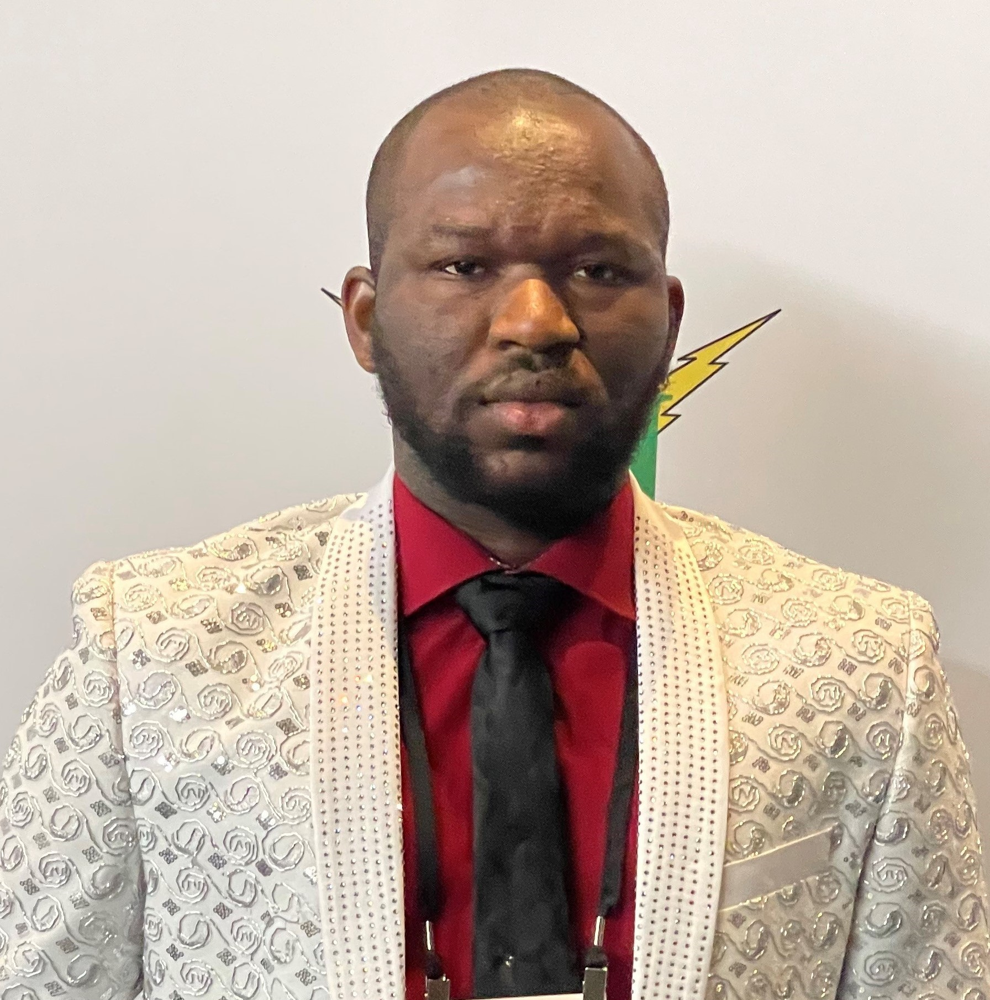

BEng. Chemical Engineering (2016)
PhD. Chemical Engineering (in view)
Diploma in Material Science & Engineering (in view)
Minor in Computer Science (in view)
Andrew Okafor Nduka is a graduate from the pretigious University of Benin (UNIBEN), Nigeria; where he obtained a BEng. in Chemical Engineering (2016) with a first class honor (4.72/5.0 CGPA).
He is currently on a Doctorate degree program at Gordon A. and Mary Cain department of Chemical Engineering at Louisiana State University (LSU), Baton Rouge, USA.
He has taken varoius courses in Chemical Engineering and across other deciplines such as Chemistry (Quantum Chemistry, Statistical Thermodynamics and Spectroscopy), Physics (Condensed Matter Physics, Computational Physics),
Electrical Engineering (Integrated Circuit Designs) and Computer Science (Machine Learning), in pursuit of a diploma certificate in Material Science and Engineering (MSE) and a minor
in Computer Science (current CGPA: 3.97/4.0). Andrew's PhD research focusses on the catalytic properties of ordered and disordered alloy phases - how catalytic properties can be tuned
by varying alloy composition (stoichiometric and off-stoichiometric), which affect the phases in which they exist. This is done using computational techniques (ab-initio quantum calculations
using DFT code, implemented in VASP). While taking courses, Andrew has also engaged in minor projects in areas such as Computatioanl Fluid Dynamics (CFD), Machine Learnig Predictions (SVM,
Random Forest, Naive Bayes Models and investigating best models using K-fold Cross Validation technique). Andrew has also developed his IT skills in the area of Cloud Computing (deploying machine
Learnig models on cloud), Programming (Python & JavaScript) and Web Development (UI/UX design and design of responsive web systems using CSS3) by taking varous courses on Cousera
and working on projects (project based learning) structured to build job experience and ethics. Outside research, Andrew has volunteered in
mentorship programs including volunteering as a judge for a high school career fair and exhibition.